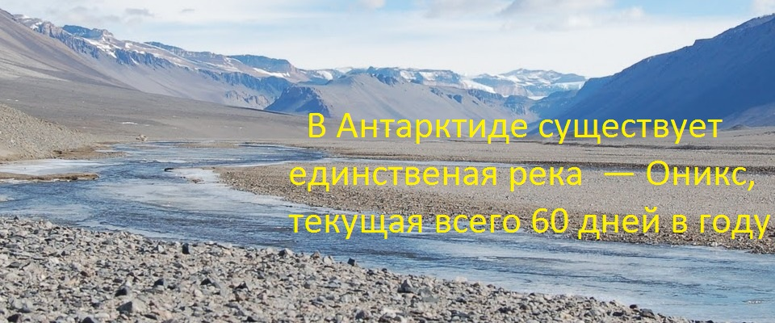

Сайт о самом интересном
... Живописные места, правдивые истории и факты о которых вам стоит узнать. Все это для людей, которые интересуются всем на нашей синей планете ...
Ну, а теперь взгляните на самые свежие статьи обо всём на свете ...
-
Интересные факты о Китае
-

Белоснежный материк Антарктида
-

Жизнь волка